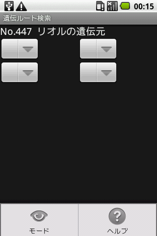

タマゴわざの遺伝元を検索する画面です。カッコ内の意味については習得わざ一覧を参照してください。
陸上グループのポケモンは基本的には全てドーブルでいけます。ドーブル以外で遺伝元を調べたいときはダイアログで「キャンセル」を選択してください。
リスト表示されているポケモンをクリック(タップ)することで、そのポケモンがわざを覚える方法を確認することができます。
リスト表示されているポケモンを長押し(約１秒)することでポケモン情報に画面が切り替わります。
メニューから他画面への切り替え、ヘルプが行えます。
